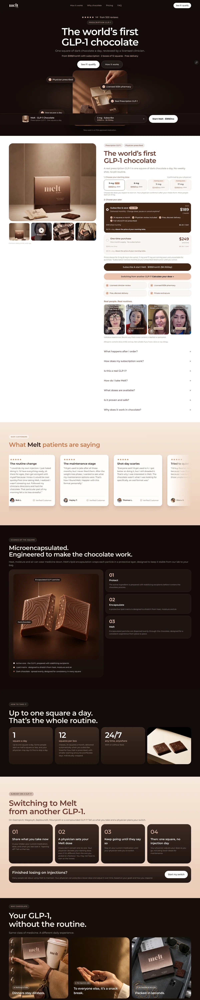

Main product page
“The world's first GLP-1 chocolate”
- Category first: the hero headline names what it is before any brand story.
- Choices up front: the dose and plan picker sit above the fold, and subscribe-and-save is the default.
- Sticky buy bar: the price and CTA follow the scroll, so buying is never more than one tap away.
- Proof stacked by the price: provider review, pharmacy, discreet delivery and refund promise sit right next to the buy button.
- Objections answered: an FAQ in the order people actually ask.
